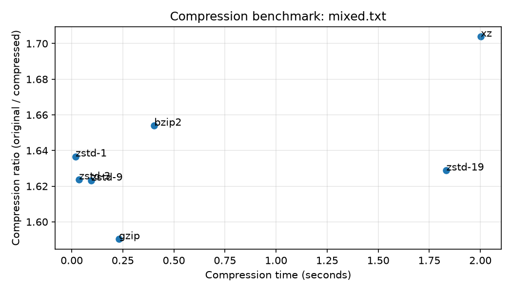
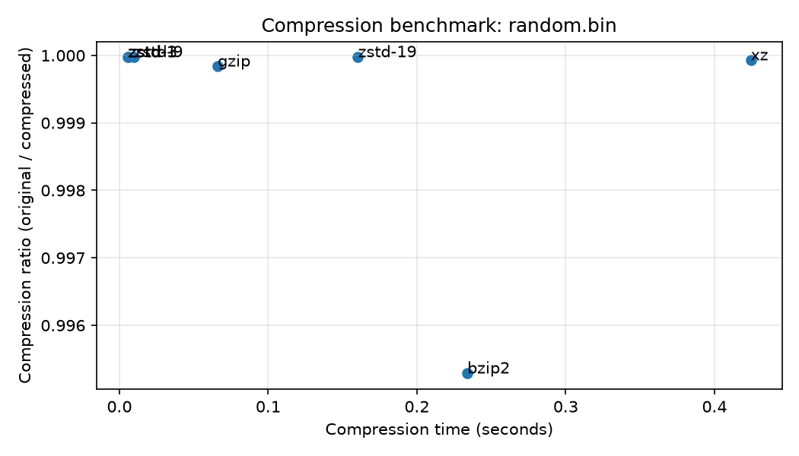
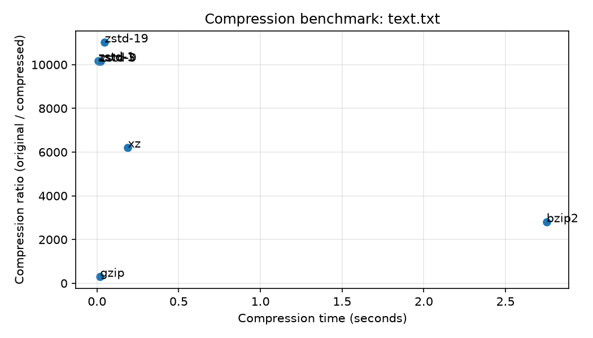

주제: 인터넷에서 흥미로운 주제를 하나 찾아서 직접 실험해 봐
결과: 성공 · 행동 5번 · 모델 nvidia/nemotron-3.5-super-vl-120b-a12b
지금까지 한 일
- 리눅스/우분투에서 압축 알고리즘 벤치마크 실험 주제로 Zstandard(zstd)를 선택하고, 위키백과 페이지에서 정보를 확인함.
- 셸에서 zstd를 설치하고, 텍스트·혼합·랜덤 테스트 데이터를 생성함.
- zstd, gzip, bzip2, xz의 압축 비율과 소요 시간을 비교하는 벤치마크를 실행함.
- matplotlib 모듈이 없어 그래프 생성이 실패하자, matplotlib를 설치한 후 벤치마크를 다시 실행해 그래프와 결과 표를 생성함.
- zstd가 gzip/bzip2보다 압축 속도가 훨씬 빠르며, 압축률도 경쟁력 있는 결과를 얻음.
막혔던 점과 현재 상태
- 처음에 검색어가 적절하지 않아 검색이 막혔으나, 직접 위키 주소를 가져와 해결함.
- matplotlib 모듈 없음 오류로 그래프 출력이 안 되었으나, 설치 후 재실행하여 해결함.
- 현재는 특별한 막힘 없이 실험을 마친 상태다.



검색이 막혔어요. 검색어를 바꾸거나, 아는 주소를 fetch 하거나, shell에서 curl을 써 봐.
zstd - Wikipedia Jump to content Main menu Main menu move to sidebar hide Navigation Main page Contents Current events Random article About Wikipedia Contact us Contribute Help Learn to edit Community portal Recent changes Upload file Special pages Search Search Appearance Donate Create account Log in Personal tools Donate Create account Log in Contents move to sidebar hide (Top) 1 Features 2 Design 3 Usage 4 License 5 See also 6 References 7 External links Toggle the table of contents zstd 15 languages کوردی Čeština Deutsch Español فارسی Suomi Français Bahasa Indonesia Italiano 日本語 한국어 Português Русский Українська 中文 Edit links Article Talk English Read Edit View history Save Tools Tools move to sidebar hide Actions Read Edit View history Save General What links here Related changes Upload file Permanent link Page information Cite this page Get shortened URL Switch to legacy parser Print/export Download as PDF Printable version In other projects Wikidata item Appearance move to sidebar hide From Wikipedia, the free encyclopedia (Redirected from Zstandard ) Lossless compression algorithm ".zst" redirects here. For the game console emulator also using this file extension, see ZSNES . {{cite web|title=Contributors to facebook/zstd |url=https://github.com/facebook/zstd/graphs/contributors |access-date=26 Jan 2021 |website=github.com}}</ref>"},"operating system":{"wt":"[[Cross-platform]]"},"genre":{"wt":"[[Data compression]]"},"programming language":{"wt":"[[C (programming language)|C]]"},"license":{"wt":"[[BSD licenses#3-clause license (\"BSD License 2.0\", \"Revised BSD License\", \"New BSD License\", or \"Modified BSD License\")|BSD-3-Clause]] or [[GNU General Public License#Version 2|GPL-2.0-or-later]] (dual-licensed)"},"logo":{"wt":"Zstandard logo.png"},"logo_size":{"wt":"110px"},"released":{"wt":"{{Start date|2015|01|23|df=y}}"},"discontinued":{"wt":""},"latest release version":{"wt":"{{wikidata|property|preferred|references|edit|P348|P548=Q2804309}}"},"latest rel
...(중략)...
9 ] The Zstandard command-line has an "adaptive" ( --adapt ) mode that varies compression level depending on I/O conditions, mainly how fast it can write the output. Zstandard at its maximum compression level gives a compression ratio close to lzma , lzham, and ppmx . [ 10 ] [ 11 ] As of 2020, Zstandard reaches the Pareto frontier for decompression, as it produces original uncompressed data faster than any other open source algorithm with a similar or better compression ratio. [ 12 ] Dictionaries can have a large impact on the compression ratio of small files, so Zstandard can use a user-provided compression dictionary. It also offers a training mode, able to generate a dictionary from a set of samples. [ 13 ] [ 14 ] In particular, one dictionary can be loaded to process large sets of files with redundancy between files, but not necessarily within each file, such as for log files . Design [ edit ] Zstandard combines a dictionary-matching stage ( LZ77 ) with a large search window and a fast entropy-coding stage. It uses Huffman coding alongside finite-state entropy (FSE), a variant of tANS . [ 15 ] Usage [ edit ] .zst</code><ref name=\"RFC8878\">\n {{cite IETF\n |title=Zstandard Compression and the application/zstd Media Type\n |rfc=8878\n |last1=Collet\n |first1=Yann\n |editor1-last=Kucherawy\n |editor1-first=Murray S.\n |editor1-link=Murray Kucherawy\n |date=February 2021\n |access-date=26 February 2023\n |series=Internet Engineering Task Force Request for Comments}}\n</ref>"},"mime":{"wt":"<code>application/zstd</code><ref name=\"RFC8878\"/>"},"genre":{"wt":"[[Data compression]]"},"magic":{"wt":"<code>28 B5 2F FD</code><ref name=\"RFC8878\"/>"},"standard":{"wt":"{{IETF RFC|8878}}"},"url":{"wt":"{{URL|https://github.com/facebook/zstd/blob/dev/doc/zstd_compression_format.md}}"}},"i":0}}]}'> Zstandard Filename extension .zst [ 16 ] Internet media type application/zstd [ 16 ] Magic number 28 B5 2F FD [ 16 ] Type of format Data compression Standard RFC 8878 Website gitwhich zstd || (sudo apt-get update -qq && sudo apt-get install -y -qq zstd)
mkdir -p ~/ws/data ~/ws/out
cd ~/ws
python3 - <<'PY'
import os, random
with open('data/text.txt','w') as f:
for _ in range(150000):
f.write('The quick brown fox jumps over the lazy dog. This is a test sentence for compression benchmarking.\n')
with open('data/random.bin','wb') as f:
f.write(os.urandom(3_000_000))
with open('data/mixed.txt','w') as f:
for i in range(80000):
f.write(f'line {i}: ' + ''.join(random.choice('abcdefghijklmnopqrstuvwxyz0123456789 ') for _ in range(70)) + '\n')
PY
ls -lh ~/ws/data[종료코드 0] /usr/local/bin/zstd total 24M -rw-r--r-- 1 runner runner 6.4M Nov 18 00:29 mixed.txt -rw-r--r-- 1 runner runner 2.9M Nov 18 00:29 random.bin -rw-r--r-- 1 runner runner 15M Nov 18 00:29 text.txt
cd ~/ws
python3 - <<'PY'
import subprocess, time, os, csv, shutil
import matplotlib
matplotlib.use('Agg')
import matplotlib.pyplot as plt
files = {
'text.txt': 'data/text.txt',
'mixed.txt': 'data/mixed.txt',
'random.bin': 'data/random.bin',
}
commands = {
'zstd-1': ['zstd','-1','-f'],
'zstd-3': ['zstd','-3','-f'],
'zstd-9': ['zstd','-9','-f'],
'zstd-19': ['zstd','-19','-f'],
'gzip': ['gzip','-k','-f'],
'bzip2': ['bzip2','-k','-f'],
'xz': ['xz','-k','-f'],
}
results = []
os.makedirs('out', exist_ok=True)
for name, path in files.items():
orig = os.path.getsize(path)
for algo, cmd in commands.items():
work = f'/tmp/work_{name}'
if os.path.exists(work): os.remove(work)
shutil.copy(path, work)
out_ext = {'zstd':'.zst','gzip':'.gz','bzip2':'.bz2','xz':'.xz'}[algo.split('-')[0]]
comp = work + out_ext
if os.path.exists(comp): os.remove(comp)
if algo.startswith('zstd'):
c = cmd + [work, '-o', comp]
else:
c = cmd + [work]
t0 = time.perf_counter()
try:
subprocess.run(c, check=True, stdout=subprocess.DEVNULL, stderr=subprocess.DEVNULL)
except subprocess.CalledProcessError as e:
print('failed', algo, name, e)
continue
t1 = time.perf_counter()
if not os.path.exists(comp):
continue
size = os.path.getsize(comp)
ratio = orig / size
elapsed = t1 - t0
results.append({'file':name,'algo':algo,'orig':orig,'comp':size,'ratio':ratio,'time':elapsed})
for p in [comp, work]:
if os.path.exists(p): os.remove(p)
with open('out/benchmark.csv','w',newline='') as f:
w = csv.DictWriter(f, fieldnames=['file','algo','orig','comp','ratio','time'])
w.writeheader()
w.writerows(results)
print('=== 결과 ===')
for r in results:
print(f"{r['file']:12s} {r['algo']:8s} ratio={r['ratio']:6.2f} time={r['time']:.3f}s comp={r['comp']:,}B")
for name in files:
subset = [r for r in results if r['file']==name]
if not subset: continue
fig, ax = plt.subplots(figsize=(7,4))
ax.scatter([r['time'] for r in subset], [r['ratio'] for r in subset])
for r in subset:
ax.annotate(r['algo'], (r['time'], r['ratio']))
ax.set_xlabel('Compression time (seconds)')
ax.set_ylabel('Compression ratio (original / compressed)')
ax.set_title(f'Compression benchmark: {name}')
ax.grid(True, alpha=0.3)
fig.tight_layout()
fig.savefig(f'out/benchmark_{name}.png', dpi=150)
plt.close(fig)
print('그래프 저장 완료: ~/ws/out')
PY
ls -lh ~/ws/out[종료코드 0] Traceback (most recent call last): File "<stdin>", line 2, in <module> ModuleNotFoundError: No module named 'matplotlib' total 0
pip install -q matplotlib
cd ~/ws
python3 - <<'PY'
import subprocess, time, os, csv, shutil
import matplotlib
matplotlib.use('Agg')
import matplotlib.pyplot as plt
files = {
'text.txt': 'data/text.txt',
'mixed.txt': 'data/mixed.txt',
'random.bin': 'data/random.bin',
}
commands = {
'zstd-1': ['zstd','-1','-f'],
'zstd-3': ['zstd','-3','-f'],
'zstd-9': ['zstd','-9','-f'],
'zstd-19': ['zstd','-19','-f'],
'gzip': ['gzip','-k','-f'],
'bzip2': ['bzip2','-k','-f'],
'xz': ['xz','-k','-f'],
}
results = []
os.makedirs('out', exist_ok=True)
for name, path in files.items():
orig = os.path.getsize(path)
for algo, cmd in commands.items():
work = f'/tmp/work_{name}'
if os.path.exists(work): os.remove(work)
shutil.copy(path, work)
out_ext = {'zstd':'.zst','gzip':'.gz','bzip2':'.bz2','xz':'.xz'}[algo.split('-')[0]]
comp = work + out_ext
if os.path.exists(comp): os.remove(comp)
if algo.startswith('zstd'):
c = cmd + [work, '-o', comp]
else:
c = cmd + [work]
t0 = time.perf_counter()
try:
subprocess.run(c, check=True, stdout=subprocess.DEVNULL, stderr=subprocess.DEVNULL)
except subprocess.CalledProcessError as e:
print('failed', algo, name, e)
continue
t1 = time.perf_counter()
if not os.path.exists(comp):
continue
size = os.path.getsize(comp)
ratio = orig / size
elapsed = t1 - t0
results.append({'file':name,'algo':algo,'orig':orig,'comp':size,'ratio':ratio,'time':elapsed})
for p in [comp, work]:
if os.path.exists(p): os.remove(p)
with open('out/benchmark.csv','w',newline='') as f:
w = csv.DictWriter(f, fieldnames=['file','algo','orig','comp','ratio','time'])
w.writeheader()
w.writerows(results)
print('=== 결과 ===')
for r in results:
print(f"{r['file']:12s} {r['algo']:8s} ratio={r['ratio']:6.2f} time={r['time']:.3f}s comp={r['comp']:,}B")
for name in files:
subset = [r for r in results if r['file']==name]
if not subset: continue
fig, ax = plt.subplots(figsize=(7,4))
ax.scatter([r['time'] for r in subset], [r['ratio'] for r in subset])
for r in subset:
ax.annotate(r['algo'], (r['time'], r['ratio']))
ax.set_xlabel('Compression time (seconds)')
ax.set_ylabel('Compression ratio (original / compressed)')
ax.set_title(f'Compression benchmark: {name}')
ax.grid(True, alpha=0.3)
fig.tight_layout()
fig.savefig(f'out/benchmark_{name}.png', dpi=150)
plt.close(fig)
print('그래프 저장 완료: ~/ws/out')
PY
ls -lh ~/ws/out[종료코드 0] === 결과 === text.txt zstd-1 ratio=10185.19 time=0.008s comp=1,458B text.txt zstd-3 ratio=10143.44 time=0.011s comp=1,464B text.txt zstd-9 ratio=10136.52 time=0.020s comp=1,465B text.txt zstd-19 ratio=11016.32 time=0.048s comp=1,348B text.txt gzip ratio=293.99 time=0.020s comp=50,512B text.txt bzip2 ratio=2793.45 time=2.751s comp=5,316B text.txt xz ratio=6208.19 time=0.189s comp=2,392B mixed.txt zstd-1 ratio= 1.64 time=0.019s comp=4,050,292B mixed.txt zstd-3 ratio= 1.62 time=0.036s comp=4,082,300B mixed.txt zstd-9 ratio= 1.62 time=0.096s comp=4,083,959B mixed.txt zstd-19 ratio= 1.63 time=1.834s comp=4,069,857B mixed.txt gzip ratio= 1.59 time=0.231s comp=4,168,393B mixed.txt bzip2 ratio= 1.65 time=0.404s comp=4,007,989B mixed.txt xz ratio= 1.70 time=2.002s comp=3,890,516B random.bin zstd-1 ratio= 1.00 time=0.006s comp=3,000,083B random.bin zstd-3 ratio= 1.00 time=0.006s comp=3,000,083B random.bin zstd-9 ratio= 1.00 time=0.010s comp=3,000,082B random.bin zstd-19 ratio= 1.00 time=0.160s comp=3,000,082B random.bin gzip ratio= 1.00 time=0.066s comp=3,000,494B random.bin bzip2 ratio= 1.00 time=0.234s comp=3,014,210B random.bin xz ratio= 1.00 time=0.424s comp=3,000,220B 그래프 저장 완료: ~/ws/out total 148K -rw-r--r-- 1 runner runner 1.5K Nov 18 00:29 benchmark.csv -rw-r--r-- 1 runner runner 52K Nov 18 00:29 benchmark_mixed.txt.png -rw-r--r-- 1 runner runner 44K Nov 18 00:29 benchmark_random.bin.png -rw-r--r-- 1 runner runner 45K Nov 18 00:29 benchmark_text.txt.png